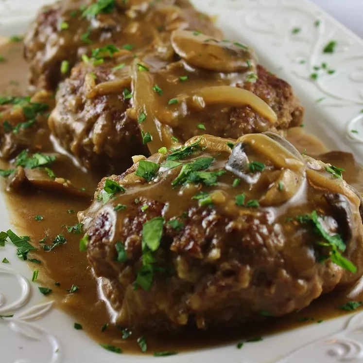

Midwest Salisbury Steak

Description
This recipe for Salisbury steak uses good quality ground sirloin and tastes wonderful. You won't have to drain any grease from the patties once they've browned. Serve over mashed potatoes, egg noodles, or rice. Simply delightful!
Ingredients
Patties:
- 1 pound ground sirloin
- ½ cup panko bread crumbs
- 1 egg, beaten
- 2 tablespoons milk
- ½ (1 ounce) package dry onion soup mix
- 1 teaspoon Worcestershire sauce
- ¼ teaspoon ground black pepper
Gravy:
- 3 tablespoons butter
- 2 cups fresh mushrooms, sliced
- 1 sweet onion, sliced
- 3 tablespoons all-purpose flour
- ½ (1 ounce) package dry onion soup mix
- 1 ½ cups beef stock
- 1 cup water
- salt and ground black pepper to taste